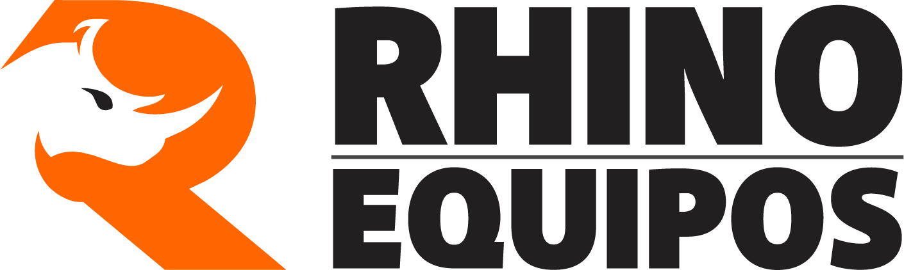

Y cómo acceder a ella: etapas de la obra, el equipo correcto para cada tarea y las opciones de financiación tras el sismo.
Tras un sismo de magnitud 7.4, la recuperación sigue una secuencia técnica: primero retirar lo caído, luego restablecer el acceso y, solo entonces, reconstruir con cimientos firmes. Cada etapa exige máquinas distintas — elegir bien acelera la obra y reduce costos.
| Etapa | Tarea típica | Equipo recomendado |
|---|---|---|
| 1. Remoción de escombros | Retiro de estructuras caídas, limpieza de lotes, carga de material | Excavadoras · Minicargadores para zonas angostas |
| 2. Apertura de vías | Despeje, nivelación y restauración de carreteras y accesos | Bulldozers · Motoniveladoras |
| 3. Cimentaciones | Zanjas, pilotaje, urbanismo de reconstrucción | Retroexcavadoras · Camiones para retiro de material |
| 4. Bases y compactación | Terraplenes, bases de vía y plataformas | Compactadores de suelos · Vibro compactadores |
| 5. Cargue y acarreo | Alimentación de plantas y movimiento de materiales | Cargadores de ruedas · Cargadores de orugas |
WhatsApp +57 314 516 2548 o el formulario del sitio. Un asesor responde en menos de 24 horas hábiles.
Las solicitudes de Cali, Pereira, Manizales, Quibdó, Chocó, Valle y eje cafetero reciben atención prioritaria.
Despliegue inmediato con respaldo logístico, técnicos en sitio y repuestos desde Colombia.
1. El 10% que vuelve a la reconstrucción. Rhino destina el 10% del valor de todas sus ventas nacionales en Colombia a proyectos de reconstrucción residencial, comercial y de infraestructura crítica — cada compra de maquinaria alimenta el fondo que reconstruye al país.
2. Financiación con inicial desde el 10%. En alianza con bancos y entidades locales, su empresa puede adquirir la flota con cuota inicial flexible y plazos adaptados al flujo de la obra. Para municipios y entidades existen esquemas de leasing y pago contra proyecto.
Las zonas afectadas por el sismo: Cali, Pereira, Manizales, Quibdó y las regiones del Chocó, Valle del Cauca y el eje cafetero.
Autoridades nacionales y locales, contratistas, constructores, organizaciones de ayuda y empresas que ejecuten proyectos de recuperación.
El despliegue se mide en semanas, no meses: la flota está disponible y la coordinación se hace desde Colombia con soporte técnico local.
Cada equipo incluye respaldo de repuestos, servicio posventa, técnicos en sitio y garantía de fábrica.
Cotice hoy — atención prioritaria para proyectos de reconstrucción.
Hablar con un asesor Ver el comunicado